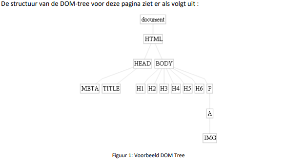
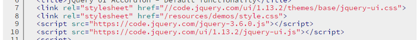

Waarmee komen de blokjes overeen?
Met de verschillende elementen van een HTML pagina.
En de lijntjes ertussen?
Die verwijzen naar de nesting, waarbij dat elementen lager op de tekening genest zijn in elementen die hoger liggen.
Opdracht 2
We openen de devtools van de pagina:
Als we met onze muis over een element gaan wordt die aangeduid op de pagina:
We kunnen een element verwijderen door rechts te klikken:
We kunnen ook de inhoud van een element veranderen:
Na een refresh komt alles weer terug naar zijn oorspronkelijke toestand:
Opdracht 3
Rechts zien we de volledige inhoud van de Accordeon:
We zien dat de verschillende sections bestaan uit <h3> en <div> elementen.
Rechts in dit filmpje zien we welke elementen veranderen wanneer we de verschillende sections van de accordion klikken.
Door op "view source" te klikken, zie je een groot verschil tussen wat er in de broncode van je HTML-document moet staan en
wat de uiteindelijke structuur in de DOM-tree is. Je ziet bv. dat er heel wat attributen aan de oorspronkelijke elementen zijn toegevoegd. Hoe zou dit gebeurd zijn?
Door middel van css en javascript.
